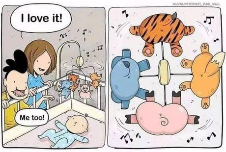

Développement assisté par IA
🤖 ❤️ 🧑💻

🤔
Qu'est-ce que l'IA ?
Machine capable de simuler l'intelligence humaine
Spécialisées sur un domaine via un entrainement sur un jeu de données
Présente dans tous les domaines aujourd'hui
📝 💬 📊 🎨 💻
l'IA pour le code 🧑💻
Pourquoi ?
- Avancées majeures dans l'IA
- Augmentation de la complexité des applications
-
Les développeurs sont
fainéantsefficients
Comment ça marche ?
LLM : Large Language Model
LLM
- Modèle de langage
- Entrainé sur un corpus de texte
- Prédiction de la suite du texte
"Coding" time 🧑💻

Autres usages
- Expliquer
- Documenter
- Améliorer
- Trouver les failles
- Transpiler
Conclusions
🤩
- Versatile
- Génère un boilerplate convaincant
- Connait les librairies les plus utilisées
- Bootstraping de projet
😕
- Sensible au promp
- Pas toujours pertinent
- Informations techniques datées
- Assez lent
- Indisponibilités
Step up
Github Copilot

Copilot c'est quoi ? 🤔
Introduit en Juin 2021
Autocomplétion sous stéroïdes
Principaux atoux
- Connait la codebase du projet
- Base d'entrainement énorme (tout Github)
- Mode de fonctionnement "transparent"
- S'adapte à votre style
Copilot Labs / Copilot X
🤯
"Et c'est pas fini !"
- GPT-4 dans l'IDE
- Permet d'interroger la doc
- Génération de PR
- Assistant CLI pour le terminal
- Génération de tests
Mon RetEx
- 2x plus productif pour le code
- 4x plus productif pour les tests
- 10€/mois largement justifiés
- Focus sur la valeur ajoutée
- Copilot version entreprise disponible
- Rend fainéant
De manière plus globale
- Options de privacy
- Partager ou pas notre code
- Utiliser ou pas des snippets existants
- Version Enterprise
- Pricing
- Privacy
- Beaucoup de choses à venir
Et dans le terminal ?
Warp
> Le terminal du 21e siècle
Phind
Le meilleur de Google et ChatGPT, orienté développeur
phind.comL'envers du décor
Le limites du prompting
- Biais d'entrainements
- Limitations arbitraires
- Idéologiques
- Politiques
- "Hallucinations"
- Réponses fausses inventées
Problématiques générales
- Peu de choses vraiment "open" (source)
- Beaucoup de modèles verouillés
- Accessible uniquement aux grandes entreprises
- Récupération discutable des données
Big corps dans l'ombre
Coucou Microsoft
Un domaine tout de même prometteur
- Emballement des modèles proposés
- De plus en plus facile
- De moins en moins cher
- Travaux open source colossaux
- Self-hosting possible sur un laptop
Émergence d'outils meta
- Auto-GPT
- GPT 4 All
- AgentGPT
Les 3 choses à retenir
- Gain de productivité énorme
- Écosystème en ébulition
- Marque le début d'une nouvelle ère
Questions ?
🤖
Depuis le début du pitch :
- 3 nouveaux modèles révolutionnaires sont sortis
- 825 nouvelles personnes se revendiquent "prompt engineer"
- Ce pitch est déjà obsolète